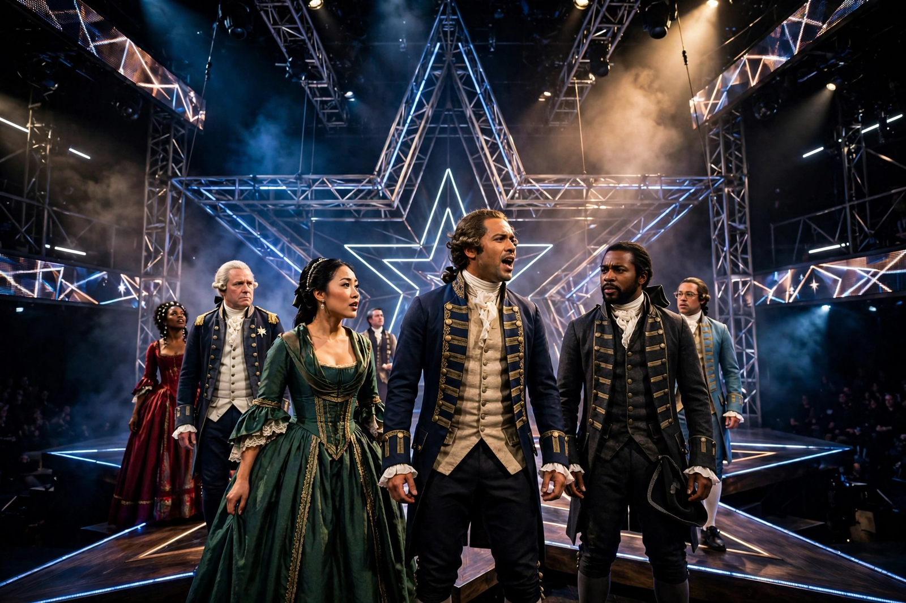

| Music | Lin-Manuel Miranda |
|---|---|
| Lyrics | Lin-Manuel Miranda |
| Book | Lin-Manuel Miranda |
| Basis | Alexander Hamilton (2004) by Ron Chernow |
| Premiere | January 20, 2015, The Public Theater, New York City |
| Productions | 2015 Off-Broadway; 2015 Broadway; 2017 West End; multiple tours |
Hamilton: An American Musical is a sung-and-rapped-through biographical musical with music, lyrics, and book by Lin-Manuel Miranda. It tells the story of American Founding Father Alexander Hamilton through songs influenced by hip-hop, R&B, pop, soul, and traditional show tunes, and casts non-white actors as the historical figures. Miranda described Hamilton as "America then, as told by America now".
The musical follows Hamilton from his arrival in New York as an orphaned immigrant from the Caribbean, through his service as George Washington's aide-de-camp in the Revolutionary War, his marriage to Eliza Schuyler, his authorship of The Federalist Papers, his tenure as the first Secretary of the Treasury, his rivalry with Aaron Burr, and his death in their 1804 duel in Weehawken, New Jersey.
Hamilton premiered Off-Broadway at The Public Theater in January 2015 and transferred to the Richard Rodgers Theatre on Broadway in August 2015, near Times Square. A London production opened at the Victoria Palace Theatre in December 2017, joining the tradition of the West End. Touring productions have played across North America, Australasia, and continental Europe. A filmed version of the original Broadway production was released on Disney+ in July 2020.
The musical won 11 Tony Awards from a record 16 nominations, the Pulitzer Prize for Drama, and the Grammy Award for Best Musical Theater Album. Its cast recording and cultural footprint extended well beyond theatre audiences, and it is frequently credited with renewing popular interest in the American founding era.